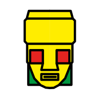

<md-toolbar color="primary">
    <span>Animating Faces</span>
    <!-- This fills the remaining space of the current row -->
    <span class="fill-space"></span>
</md-toolbar>

<div class="grid">
    <md-card>
        <!--ANIMATION AFFECTS HERE-->
        
        <svg viewbox="0 0 100 100"></svg>
    </md-card>
    <md-card-actions class="buttons">
        <!--ANIMATION TRIGGERED HERE-->
        <button md-raised-button  color= "primary" (click)="anim1()">Anim1</button>
    </md-card-actions>

    <md-card>
        <!--ANIMATION AFFECTS HERE-->
        
        <svg viewbox="0 0 100 100"></svg>
    </md-card>
    <md-card-actions class="buttons">
        <!--ANIMATION TRIGGERED HERE-->
        <button md-raised-button  color= "primary" (click)="anim1()">Anim2</button>
    </md-card-actions>
</div>


